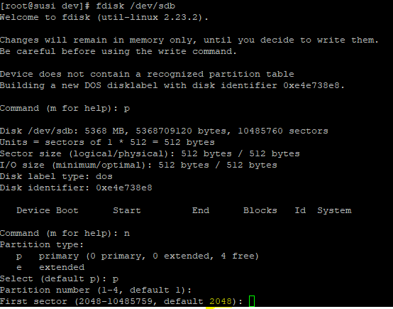
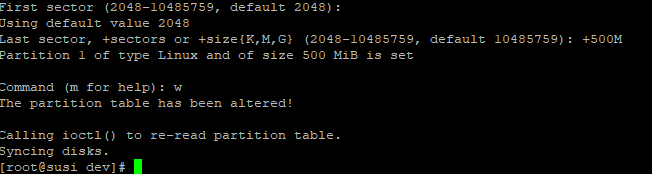
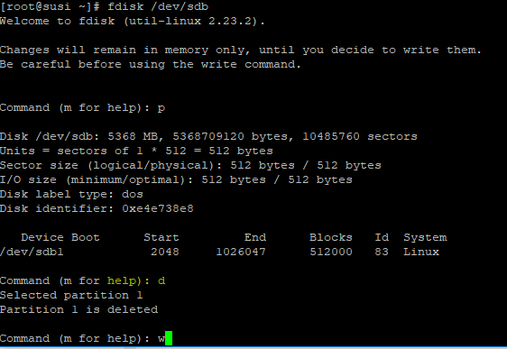
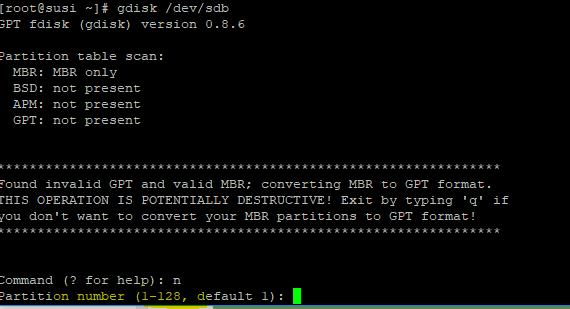
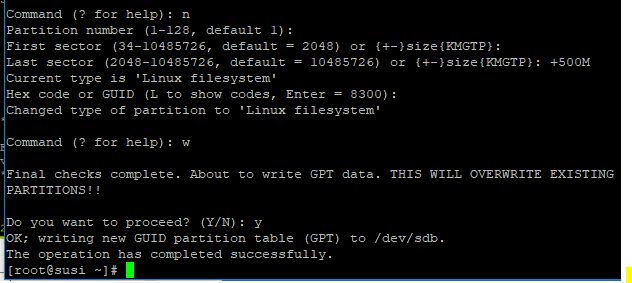
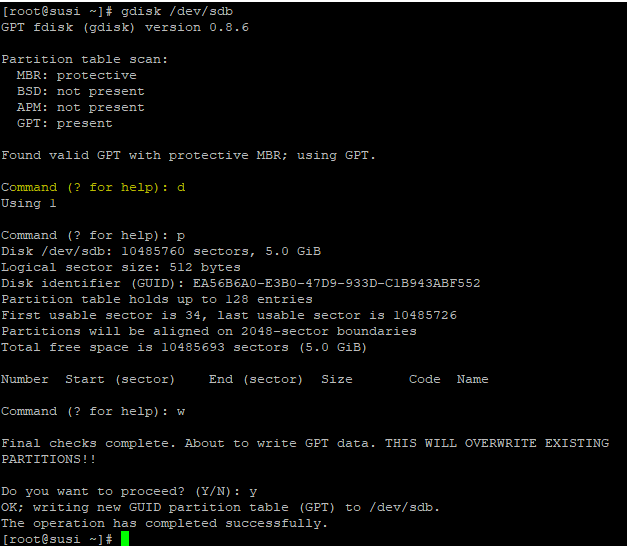

MBR (Master Boot Record) and GPT (GUID Partition Table) are two different ways of storing the partitioning information on a drive.
This information includes where partitions start and begin, so your operating system knows which sectors belong to each partition and which partition is bootable.
MBR works with disks up to 2 TB in size
MBR also only supports up to four primary partitions— if you want more, you have to make one of your primary partitions an “extended partition” and create logical partitions inside it.
GPT:-
GPT stands for GUID Partition Table.
On an MBR disk, the partitioning and boot data is stored in one place. If this data is overwritten or corrupted, you’re in trouble. In contrast, GPT stores multiple copies of this data across the disk, so it’s much more robust and can recover if the data is correupted.
=====================================================
Create partition :-
============
#fdisk /dev/xvda
M -available option to managing
By default sector start from 2048 since first is allocated for MBR.
After creating partition and w for write table to disk and exit.


Start creating file system
[root@susi dev]# mkfs -t xfs /dev/sdb1
meta-data=/dev/sdb1 isize=512 agcount=4, agsize=32000 blks
= sectsz=512 attr=2, projid32bit=1
= crc=1 finobt=0, sparse=0
data = bsize=4096 blocks=128000, imaxpct=25
= sunit=0 swidth=0 blks
naming =version 2 bsize=4096 ascii-ci=0 ftype=1
log =internal log bsize=4096 blocks=855, version=2
= sectsz=512 sunit=0 blks, lazy-count=1
realtime =none extsz=4096 blocks=0, rtextents=0
[root@susi dev]#
Mount the device on the system
[root@susi dev]# mkdir /app
[root@susi dev]# mount /dev/sdb1 /app
[root@susi dev]# df -h /app
Filesystem Size Used Avail Use% Mounted on
/dev/sdb1 497M 26M 472M 6% /app
[root@susi dev]#
[root@susi dev]# cd /app
[root@susi app]# touch f1 f2 f3
[root@susi app]#
[root@susi app]# ls
f1 f2 f3
[root@susi app]#
[root@susi app]# umount /app
umount: /app: target is busy.
(In some cases useful info about processes that use
the device is found by lsof(8) or fuser(1))
[root@susi app]#
Since we are inside the mount point. Come out from file system and do the umount.
[root@susi app]# cd
[root@susi ~]# umount /app
[root@susi ~]#
Delete :-
======
D - delete the partition

Run #partprobe to reload the partition table
[root@susi ~]# partprobe
[root@susi ~]#
Mount with uuid :-
#blkid ===> get uid
#mount -U "uuid"
GPT based :-
Upto 128 primary partition we can create and also more than 2TB file system can be created.


Remainint mount and all same as MBR based.
Delete :-
